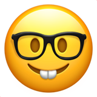

SaaS Product Scheduling for Multiple Locations
Duration: 4 weeks so far
Tools: Usertesting.com, FigJam, Figma
 My Roles: User Research, Prototyping
Initially, our software catered primarily to solo dental offices. Nevertheless, in recent times, there has been a rapid expansion in the number of offices that have opened up at multiple locations and are sharing patients among them, in order to accommodate their hectic work and personal schedules. Consequently, we have been receiving an increasing number of complaints from our users about the current scheduling calendar's lack of user-friendliness. Users are unable to view multiple schedule calendars on their screens simultaneously, which causes delays in finding suitable appointment times for patients, leading to frequent apologies on their part.
The team includes two product managers and two UX designers, with me as the lead designer. We started the project with a couple of brainstorm sessions in FigJam to make sure that we understood the problem we tried to solve. During the discussion, we grouped schedule related tasks to four categories. This helped us understand the user's routine and identify questions that were criticial to the problem solving that we didn't have an answers to. It's time to conduct the user research.

As the design lead, I developed a comprehensive user interview script designed to identify the exact pain points experienced by our users. Subsequently, I reached out to approximately 80 users via email, requesting a 30-minute conversation to gain a deeper understanding of their experiences. Ultimately, we managed to converse with five users representing offices of varying sizes, providing us with a unique opportunity to discern whether users from smaller practices encountered different pain points than those from larger DSOs.
The interview sessions went well and we were able to collect a lot of useful insight. After reviewing the interview videos several times and making detailed notes, I noticed that there were some common painpoints and common use patterns, despising the user's office size.
- All users thought it was painful to switch from one location to another one, mainly due to the bad performance and lagging time. This obvisouly was not an design issue, but needed to be addressed ASAP;
- All users currently manually browsed through the calendar whenever they needed to find an opening;
- It was painful to move one patient from one location to a different one because they had to delete the appointment from the original location and created a new one from scratch at the other location;
- When asked whether they were aware of the "Search openings" feature, all users were familiar with its existence and had attempted to use it at some point. However, only one user expressed a willingness to give the feature another try if we made improvements. The remaining four users preferred using the calendar view and were indifferent to the search function, even if we were to enhance it significantly.
The team was taken aback by the unexpected revelation that users were indifferent to the search function despite the anticipated time-saving benefits. As a result, we decided to reevaluate our approach and prioritize enhancing the calendar view, which had proven to be a popular feature among all users.
Based on the insight gathered from the user research, I created a persona to provide the team with a better understanding of the user's current challenges and requirements. Additionally, I crafted a story for our persona based on the user's feedback from my notes. This story served as a useful tool for all team members to quickly grasp the problem we were attempting to solve, the intended audience, and the critical issues that required addressing. Moving forward, the user story could also be used to validate any solutions we devised during the design phase.

From the user research insights, we discovered that our users highly valued the calendar view due to its visual nature and accuracy in displaying data. Furthermore, it provided a more efficient way to train new employees. Nonetheless, displaying all locations' schedules on one screen proved to be impractical, particularly for larger practices with numerous providers. With over 10 providers in some locations, cramming all the data into one screen would require excessive scrolling and hinder productivity.
It's time to brainstorm again. The designers (me and the other designer) worked out a total of 5 designs, looking at the problem from different angels.

Next, we will evaluate each design concept with moderated usability testing and narrow it down, hopefully, to one solution.